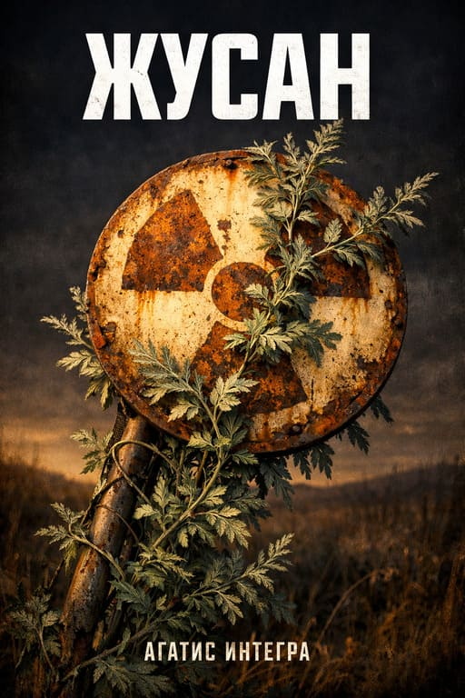

ЖУСАН
Степь помнит всё
Август 2005 · Семипалатинская область
Запах полыни — горький, сухой, маслянистый.
Жёлтая трава до горизонта.
Тридцать километров видимости. Негде спрятаться.
Степь не враждебна. Ей всё равно.
Трасса прямая, как линейка. Серая лента в жёлтой траве. Полынь по пояс. Ни тени, ни дерева. Тридцать километров видимости — и нечего видеть.
Город десяти тысяч учёных. Широкие бульвары для пустоты. Бетонные коробки в полыни. Кто-то ещё включает свет на третьем этаже.
18 500 квадратных километров. 456 взрывов за 40 лет. Штольни. Кратеры. Знаки радиации ржавеют на ветру. Земля помнит каждый.
Дым на горизонте.
Бетонные стены. Колючая проволока.
Кто-то ждёт.
Полынь высажена в три ряда вокруг периметра.
Земля светится.
Полынь тёплая на ощупь.
Щёлканье. Сухое. Костяное.
Не оглядывайся.
Кратер.
День... который? Не помню.
Боеприпасы: нет.
Полынь.
Не один.

ЖУСАН
Степь пахнет полынью. Ветер несёт пепел. Полигон молчит.
Почитать Читать на сайтеЧасто задаваемые вопросы
О чём книга «Жусан»?
«Жусан» — постапокалиптический роман о выживании в казахской степи у Семипалатинского ядерного полигона. Август 2005 года: мир рушится, мёртвые поднимаются из могил, и парень из Владивостока Артём Чернов, застрявший здесь по дороге домой, учится жить среди полыни, радиации и людей, опаснее самих мертвецов. «Жусан» по-казахски — полынь.
Какой жанр у книги «Жусан»?
Постапокалипсис, зомби-выживание и мрачный реализм. По стилю — рубленый ритм, телесная сенсорика, документальная точность. По духу непознаваемого — «Пикник на обочине» Стругацких: тайна Полигона никогда не объясняется, читатель видит только эффекты.
Где происходит действие «Жусана»?
Восточный Казахстан, район Семипалатинска (ныне Семей), август 2005 года. Реальные локации: Семипалатинский ядерный полигон (456 взрывов за 40 лет, 18 500 км² мёртвой земли), город-призрак учёных Курчатов, река Иртыш, степные посёлки. Эпоха Nokia 3310, тенге, Дэу Нексии, бумажных карт — без GPS и смартфонов.
Кто главный герой «Жусана»?
Артём Чернов, 21–22 года, парень из Владивостока. Отец-охотник с детства научил стрелять и выживать в лесу. Артём бросил всё и поехал на мотоцикле «в кругосветку» на запад — добрался до Казахстана, где его и застала катастрофа. Обычный человек, без способностей: наблюдает, слушает, отвечает, когда тронут.
Сколько глав в книге «Жусан»?
Роман состоит из пролога и шестнадцати глав плюс четырнадцать спецэпизодов-протоколов (короткие вставки от второстепенных персонажей). Структура — три акта: Хаос (одиночество в степи), Островок (жизнь на базе у Полигона) и Выбор (финал у кратера).
Кому понравится книга «Жусан»?
Читателям серьёзной постапокалиптики и зомби-прозы, поклонникам Стругацких (за принцип непознаваемого), «Дороги» Маккарти и серии «Сломанная Земля» того же автора. Книга подойдёт тем, кто ценит документальную достоверность, телесный стиль, отсутствие морализаторства и любит, когда часть вопросов остаётся без ответа.
Где читать «Жусан» онлайн?
Читать «Жусан» можно на Author.Today или прямо на сайте автора — на странице againte.gratis/zhusan/read/ доступны все опубликованные главы.
Кто автор книги «Жусан»?
Автор — Агатис Интегра (agaINTE GRAtis), российская писательница, работающая в жанрах научной фантастики, постапокалипсиса и фэнтези. Официальный сайт — againte.gratis. Среди других книг — серия «Сломанная Земля», «Навмор» и др.